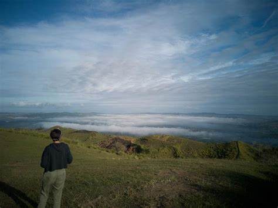

Sea of Clouds
Up in the mountains of Danao in central Bohol there is a viewpoint aptly known as Bohol Sea of Clouds, or Mt.
Puntaas. With a viewing area over rice terraces tumbling down into the clouds and an epic ride along Bohol’s
countryside sprawling with nature, viewpoints won’t get better than this.
How go to Sea of Clouds
Bohol Sea of Clouds is in the Danao Region in the highlands of central Bohol. It is roughly a 2 hour drive
from Panglao island. It takes 30 minutes to ride from Panglao island over the bridge and through Tagbilaran City.
The remaining 1.5 hours drive is a pleasant cruise along Bohol’s countryside.
Things to do in Sea of Clouds
viewing area over rice terraces tumbling down into the clouds and an epic ride along Bohol’s
countryside sprawling with nature

Best time to travel in Sea of Clouds
Best Time to Visit: The best time to witness the Sea of Clouds is during the early morning hours,
typically before sunrise, when the weather conditions are right.